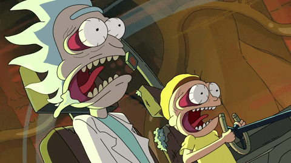

Rick and Morty é uma série americana de ficção científica animada para adultos criada por Justin Roiland e Dan Harmon
A série segue as desventuras do cínico cientista maluco Rick Sanchez e seu bondoso, mas inquieto neto Morty Smith, que dividem seu tempo entre a vida doméstica e as aventuras interdimensionais.
Personagens Principais

.png) Personagens
Personagens